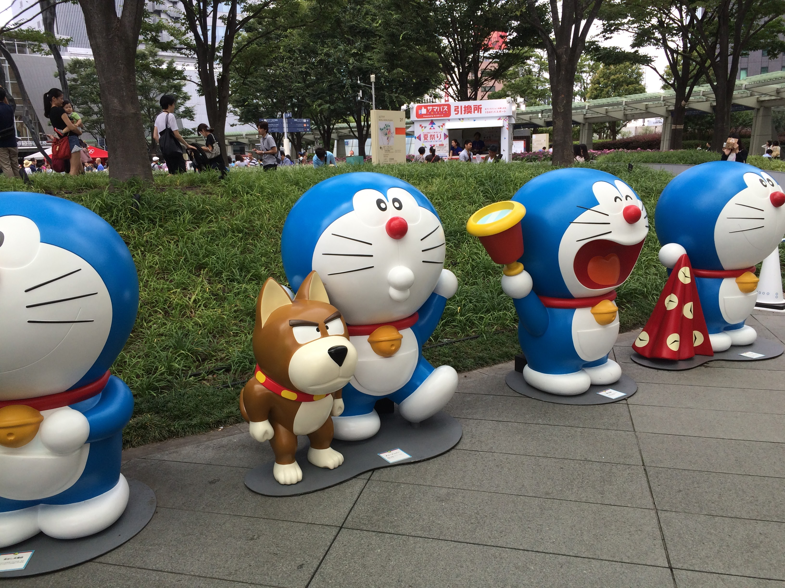
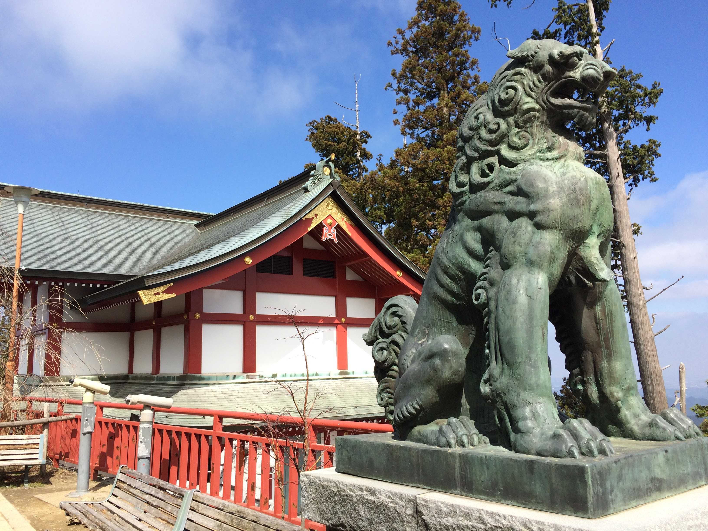
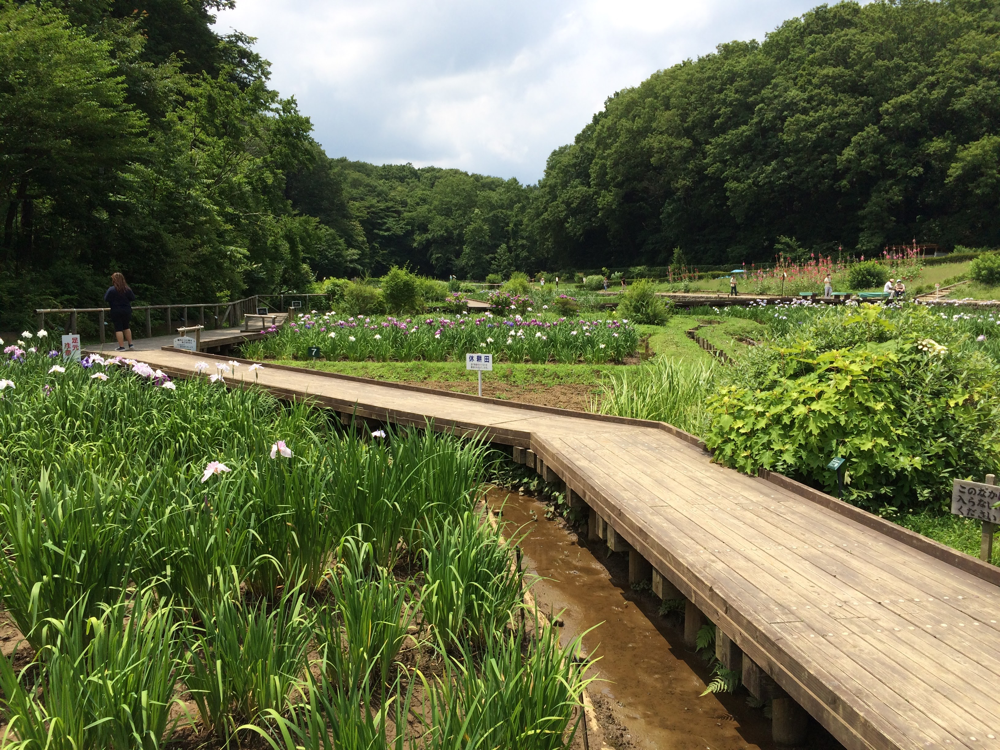

My Time in Japan
From 2014 to 2017
Home
Temples
Festivals
Food
Contact
I enjoyed traveling and eating the delicious food there! Some of my favorite things were finding new restaurants to try, going to visit interesting temples, and experiencing cool festivals.
The current date & time in Tokyo is:
The current weather in Tokyo is:
Ready to plan your own trip?
Narita International Airport
Japan Rail Pass
Hyperdia Train Timetables
Japan Bus Online
Japan National Tourism Organization
UNESCO World Heritage Sites - Japan
Cherry Blossom Forecast
Mt. Fuji Climbing
1 / 3

Doraemon statues
3 / 3

Shrine guardian
2 / 3

Iris garden
❮
❯